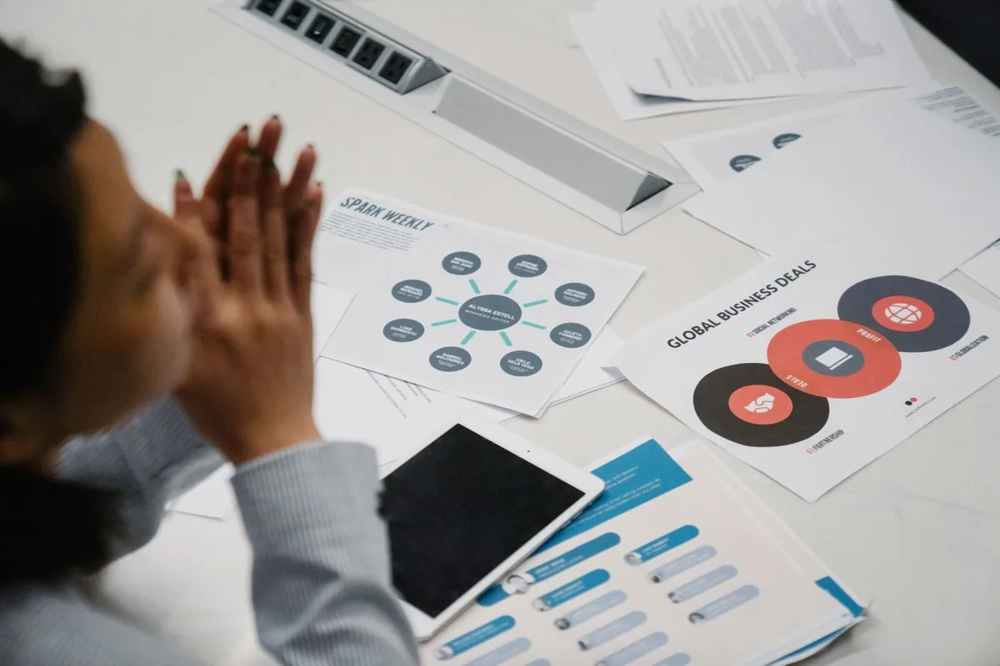

Bandi, finanza agevolata e fundraising
«Stiamo pensando a un investimento.» Il tuo cliente ti chiede da dove iniziare: il primo passo è distinguere progetto, fabbisogno e strumenti.
Approfondisci il servizioIl cliente vuole investire. Prima di cercare uno strumento, occorre capire il progetto, i tempi e le risorse disponibili.

«Stiamo pensando a un investimento.» Il tuo cliente ti chiede da dove iniziare: il primo passo è distinguere progetto, fabbisogno e strumenti.
Approfondisci il servizioQuando il cliente apre una nuova fase di crescita, lo Studio può aiutare a riconoscere le domande che meritano un confronto strategico.
Approfondisci il servizioUn mezzo in più, una flotta da rinnovare, un furgone da attrezzare. L’esigenza operativa viene prima della formula contrattuale.
Approfondisci il servizioL’impresa è cambiata. Le coperture la rappresentano ancora? Una domanda da approfondire con chi legge rischi e protezione.
Approfondisci il servizioIl cliente vuole investire. Prima di cercare uno strumento, occorre capire il progetto, i tempi e le risorse disponibili.
Esplora il contesto con lo strumento qui accanto. Nessun punteggio o risposta automatica: sono domande da portare a un confronto professionale.
Le imprese che vogliono crescere si trovano spesso davanti a scelte complesse, opportunità difficili da leggere e percorsi poco coordinati. Questa macroarea nasce per trasformare crescita, sviluppo e accesso alle opportunità in azioni più chiare, ordinate e attivabili.
Molte imprese hanno margini di sviluppo, possibilità di investimento e bisogno di rafforzare la propria struttura, ma senza una regia chiara rischiano dispersione, lentezza decisionale e occasioni perse. Questa macroarea serve proprio a dare ordine, priorità e concretezza a scelte che incidono sulla crescita.
Una macroarea pensata per accompagnare le PMI in percorsi di sviluppo più solidi, sostenibili e coerenti con gli obiettivi dell’impresa.
In questa macroarea trovi quattro servizi pensati per aiutare imprese e Studi a leggere meglio le opportunità, scegliere con più metodo e attivare percorsi di crescita concreti, sostenibili e commercialmente utili.
Un supporto per valutare bandi, incentivi e strumenti di raccolta capitali, definendo obiettivi, fonti pubbliche o private e percorso più coerente con investimenti, sviluppo e crescita.
ApprofondisciUn servizio dedicato alle aziende che vogliono crescere con maggiore chiarezza, metodo e visione, rafforzando priorità, direzione e capacità decisionale senza approcci frammentati o improvvisati.
ApprofondisciSoluzioni di noleggio per flotte aziendali e furgoni attrezzati, costruite sulle esigenze operative, finanziarie e organizzative dell’impresa, senza immobilizzare capitale in modo non necessario.
ApprofondisciUn servizio pensato per leggere meglio esigenze di tutela, continuità e protezione, integrando la crescita dell’impresa con soluzioni assicurative più ragionate, coerenti e sostenibili.
ApprofondisciPossiamo partire da un confronto iniziale per leggere il contesto, chiarire le priorità e individuare l’area di sviluppo più sensata da attivare, così da costruire un percorso più ordinato, più leggibile e davvero utile.
Puoi preparare il tema della call senza inserire dati dei tuoi clienti.
Puoi partire da una domanda su crescita, finanza e sviluppo, oppure semplicemente dal modo in cui lavora il tuo Studio.
La relazione resta al tuo Studio. Chiariremo insieme come si coinvolgono gli specialisti e cosa coordina CHP.
Prenota una call conoscitiva Hai una richiesta? Parliamone su WhatsApp ↗